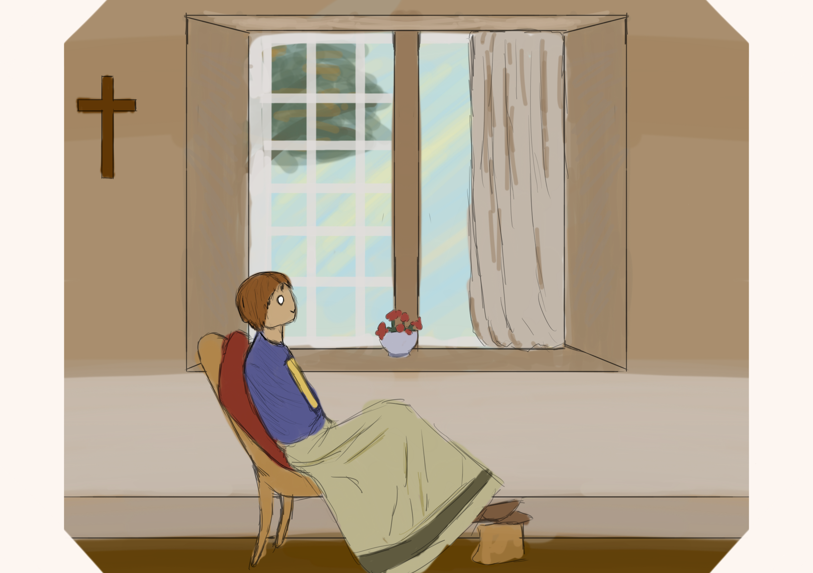

Life Story · A New Rhythm
《「陳」年往事，新的下一頁》
以下內容根據訪談整理，記下 Elaine 在生活步伐改變後，仍然保持好奇、學習與探索的日常。

2024年 · 生活新步伐
《步伐變了，好奇未減》
原本，Elaine 打算提早退休，與朋友到英國、澳洲各遊學半年，彌補年輕時未有機會經歷的生活。然而，2024年確診癌症，打亂了她的計劃。治療帶來身體的不適，也讓她面對身體上的疼痛與未來的不確定。
然而，家人的照顧，同事與上司的支持，以及基督信仰帶來的力量，陪伴她逐漸調整生活。放慢步伐之後，她仍嘗試保留喜歡的事。行不了獅子山，就改行較容易的山，按身體狀況運動，也到沙灘曬曬太陽。
與年輕人交流時，她依然想知道大家正在接觸什麼，希望增廣見聞，不與世界脫節。英澳的旅程暫時未能成行，眼前的生活卻仍有值得探索的地方。
從童年那張擠迫的床褥，到後來的課堂與校園，再到職場，Elaine 一直學習。如今，步伐需要調整，但那份想認識世界多一點的心意，仍留在她的日常裏。
步伐可以調整 · 對世界的好奇與學習，仍然在日常裏繼續